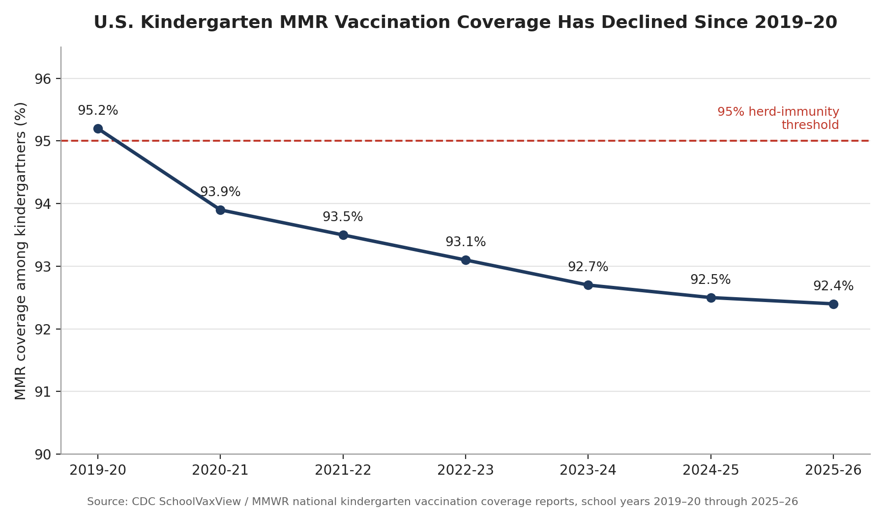

"The CDC reports 3,659 confirmed measles cases in the United States in 2026 (as of September 24, 2026), and MMR vaccination coverage among U.S. kindergartners has decreased from 95.2% during the 2019–2020 school year to 92.4% in the 2025–2026 school year."
CDC's own measles data-and-research page (updated September 25, 2026, reflecting counts through Wednesday, September 24) reports 3,659 confirmed measles cases for 2026. This matches the claim exactly.
| Metric | Value |
|---|---|
| Confirmed cases, 2026 (as of 9/24/26) | 3,659 |
| Outbreak-associated share | 95% (3,478 of 3,659) |
| Jurisdictions reporting cases | 47 |
| Prior full-year record (2019, post-elimination era) | 1,274 |
Cross-checked against two independent secondary sources reporting the same CDC feed: Contagion Live's September 25, 2026 update and news coverage of CDC's first 2026 measles death confirmation, both citing the same 3,659/September 24 figure.
CDC's SchoolVaxView / MMWR national kindergarten vaccination coverage series confirms both endpoints in the claim:
| School year | National MMR coverage |
|---|---|
| 2019–20 | 95.2% |
| 2020–21 | 93.9% |
| 2021–22 | 93.5% |
| 2022–23 | 93.1% |
| 2023–24 | 92.7% |
| 2024–25 | 92.5% |
| 2025–26 | 92.4% |

The decline is monotonic across all seven years — not a two-point comparison masking a rebound — and every year from 2021–22 onward sits below the ~93–95% coverage generally considered necessary for measles herd immunity.
Both figures in the claim match CDC's own published numbers, retrieved directly from CDC's measles data page and CDC's MMWR/SchoolVaxView kindergarten vaccination series, and independently corroborated by multiple news outlets summarizing the same CDC releases (Axios, CNBC, KFF, The Hill, Forbes). No methodology shift, mid-year redefinition, or column-name/value mismatch was found in either series that would undermine the comparison.